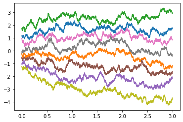
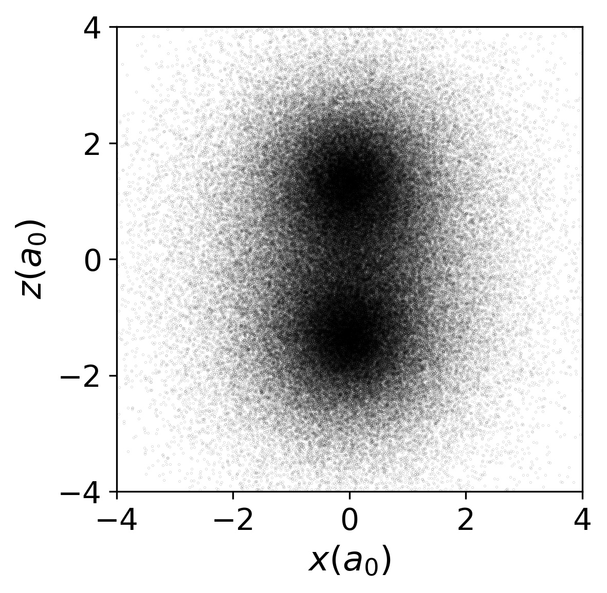
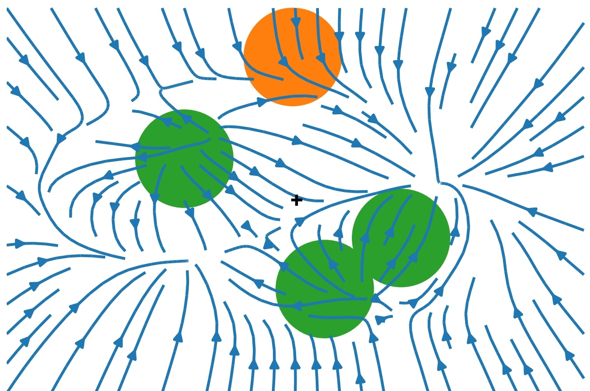

ML and SM 2
- Slides: austen.uk/slides/ml-stat-mech-2
- Text: austen.uk/post/ml-stat-mech-2
Recap
Lecture 1 introduced idea of Variational Inference (VI)
Turns inference in latent variable models into optimization
Today: how to leverage neural networks & automatic differentiation
Model of choice: Variational Autoencoder
\[ \DeclareMathOperator*{\E}{\mathbb{E}} \newcommand{\cE}{\mathcal{E}} \newcommand{\R}{\mathbb{R}} \newcommand{\bx}{\mathbf{x}} \newcommand{\bz}{\mathbf{z}} \newcommand{\br}{\mathbf{r}} \newcommand{\bv}{\mathbf{v}} \newcommand{\bmu}{\boldsymbol{\mu}} \newcommand{\bSigma}{\boldsymbol{\Sigma}} \newcommand{\bzeta}{\boldsymbol{\zeta}} \]
VI redux
Model defined by prior \(p(z)\) and generative model \(p\_\phi(x|z)\)
Similar model for posterior \(q\_\theta(z|x)\)
Two representatios of \(p(x,z)\): forward and backward \[ p_\text{F}(x,z)= p_\theta(x|z)p(z),\qquad p_\text{B}(x,z)= q_\phi(z|x)p_\text{D}(x). \] where \(p_\text{D}(x)\) is data distribution
KL between these two models \[ D_\text{KL}(p_\text{B}||p_\text{F})= \E_{x\sim \text{Data}}\left[\E_{z\sim q_\phi(\cdot|x)}\left[\log\left(\frac{q_\phi(z|x)p_\text{D}(x)}{p_\theta(x|z)p(z)}\right)\right]\right]\geq 0. \] or \[ H[p_\text{D}]\leq \E_{x\sim \text{Data}}\left[\E_{z\sim q_\phi(\cdot|x)}\left[\log\left(\frac{q_\phi(z|x)}{p_\theta(x|z)p(z)}\right)\right]\right]. \]
RHS doesn’t involve \(p_\text{D}(x)\) explicitly, only expectation. This is implemented as empirical average over (batches of) data
- RHS often presented as
\[ \E_{x\sim \text{Data}}\left[D_\text{KL}(q_\phi(\cdot|x)||p)-\E_{z\sim q_\phi(\cdot|x)}\left[\log p_\theta(x|z)\right]\right]. \]
First term small when posterior matches prior
Second small when model matches data (reconstruction error)
Variational autoencoder
- Above picture fits into Autoencoder framework

Autoencoder trained to return outputs close to inputs
Not trivial if \(\text{dim}\\,\textbf{h}<\text{dim}\\,\textbf{x}\)!
- We have a loss function for VI in autoencoder framework \[ \mathcal{L}(\theta,\phi)=\E_{x\sim \text{Data}}\left[D_\text{KL}(q_\phi(\cdot|x)||p)-\E_{z\sim q_\phi(\cdot|x)}\left[\log p_\theta(x|z)\right]\right] \]
- We need
- To parameterize \(p_\theta(x|z)\) and \(q_\phi(z|x)\) using NNs.
- To take gradients of the loss function to perform optimization.
- Let’s look at these in turn.
Parameterization
\(\bz\in \R^{H}\), \(\bx\in \R^{D}\)
For encoder \(q_\phi(\bz|\bx)\), choose \(\mathcal{N}(\bmu_\phi(\bx),\bSigma_\phi(\bx))\)
If prior is \(\mathcal{N}(0,\mathbb{1})\) the KL term loss can be evaluated explicitly.
\(\bmu_\phi(\bx)\) and \(\bSigma_\phi(\bx)\) are parameterized using NNs, with architecture adapted to the data e.g. Convolutional neural networks for images
Similarly for decoder
$p_\theta(\cdot|\bz)=\mathcal{N}(\bmu'_\theta(\bz),\bSigma'_\theta(\bz))$Second term of loss involves
$$ -\log p_\theta(\bx|\bz) = \frac{1}{2}(\bx-\bmu'_\theta(\bz))^T\bSigma'^{-1}_\theta(\bz)(\bx-\bmu'_\theta(\bz))+\frac{1}{2}\log\det\bSigma_\theta'(\bz)+\text{const.}, $$encourages mean output \(\bmu'\_\theta(\bz)\) to be close to \(\bx\)Required expectation over \(\bz\) requires Monte Carlo
Problem: expectation depends on parameters \(\phi\), and we want derivatives
What do we do?
Reparameterization trick
If you have \(\zeta\sim\mathcal{N}(0,1)\) then \(\sigma \zeta +\mu\sim \mathcal{N}(\mu,\sigma^2)\)
Separates parameters from sampling, so that a Monte Carlo estimate of an expectation \[ \E_{x\sim \mathcal{N}(\mu,\sigma^2)}\left[f(x)\right]\approx \frac{1}{S}\sum_{s=1}^S f(\sigma z_s + \mu) \] is explicitly a function of \(\sigma\) and \(\mu\), so derivatives may be taken
Generalizes to multivariate Gaussian: \(\bz\sim \bSigma_\phi^{1/2}(\bx)\bzeta+\mu_\phi(\bx)\).
More practicalities
In practice a single \(\bz\) sample is usually found to provide useful gradients for optimization
Large datasets usually split into batches (sometimes called mini-batches)
For batch of size \(B\) loss function is estimated using \(B\) iid $ _b(0,)$ \[ \mathcal{L}(\theta,\phi)\approx\frac{1}{B}\sum_{b=1}^B\left[D_\text{KL}(q_\phi(\cdot|\bx_b)||p)-\log p_\theta(\bx_b|\bSigma_\phi^{1/2}(\bx_b)\bzeta_b+\mu_\phi(\bx_b))\right] \]
Gradients calculated by automatic differentiation, implemented in all modern DL libraries
There’s a great deal of craft to the business of training…
Interpretability
One promise of latent variable models is an interpretable latent space
Moving in lower dimensional latent space \(\R^H\) allows us to explore the manifold in which the data is embedded in \(\R^D\)
Some issues:
Loss function doesn’t require that the latent space is used at all. If decoder model \(p\_\theta(\bx|\bz)\) is rich enough may have \(p\_\theta(\bx|\bz)\approx p\_\text{D}(\bx)\). By Bayes’ theorem posterior is \[ \frac{p\_\theta(\bx|\bz)p(\bz)}{p\_\text{D}(\bx)}\approx p(\bz), \] same as the prior! This is posterior collapse
No guarantee that latent space is used nicely, e.g. with variables for colour, shape, position, etc. (disentangled representation). One problem: prior \(\mathcal{N}(0,\mathbb{1})\) is rotationally invariant, so lifting symmetry is necessary.
Compression with VAEs: bits back
In Lecture 1 I suggested that good probabilistic models could give better compression
How does this work for latent variable models like VAE?
Problem, as always, is that model doesn’t have explicit \(p_\text{M}(x)\): marginalizing over latent variables is intractable.
- Recall that loss function of VAE is based
\[ H[p_\text{D}]\leq \E_{x\sim \text{Data}}\left[\E_{z\sim q_\phi(\cdot|x)}\left[\log\left(\frac{q_\phi(z|x)}{p_\theta(x|z)p(z)}\right)\right]\right]. \]
- Split RHS into three terms
\[ \E_{x\sim \text{Data}}\left[\E_{z\sim q_\phi(\cdot|x)}\left[\log\left(q_\phi(z|x)\right)-\log\left(p_\theta(x|z)\right)-\log\left(p(z)\right)\right]\right]. \]
Remember \(-\log_2 p(x)\) is length in bits of optimal encoding of \(x\). Last two terms could be interpreted as
- Given data \(x\) we sample \(z\sim q_\phi(\cdot|x)\).
- We encode \(x\) using the distribution \(p_\theta(\cdot|z)\), then
- Encode \(z\) using the prior \(p(\cdot)\).
- For decoding, go in reverse
- Decode \(z\) using the prior \(p(z)\).
- Decode \(x\) using \(p\_\theta(\cdot|z)\)
- We’ll never reach Shannon bound this way, however, because of the negative first term in
\[ \E_{x\sim \text{Data}}\left[\E_{z\sim q_\phi(\cdot|x)}\left[\log\left(q_\phi(z|x)\right)-\log\left(p_\theta(x|z)\right)-\log\left(p(z)\right)\right]\right]. \]
- We need to make the code shorter. How?
Remember that Shannon bound applies in limit of \(N\to\infty\) iid data
Imagine a semi-infinite bit stream mid-way through encoding
We decode part of already encoded bitstream using \(q\_\phi(\cdot|x)\)
Result is \(z\sim q\_\phi(\cdot|x)\): use for encoding \(x\) as described above
These are bits back: remove \(H(q\_\phi(\cdot|x))\) bits on average
Allows us to reach the Shannon bound
When decoding data, the last thing we do for each \(x\) is encode \(z\) back to the bitstream using \(q\_\phi(\cdot|x)\)
Markov chain autoencoders (??)
Up to now our encoder and decoder were just Gaussian models
Can we produce a model with a richer distribution?
Make forward and backward models Markov processes with \(T\) steps \[ p_\text{F}(z_0,\ldots x=z_T) = p_\theta(x=z_T|z_{T-1})p_\theta(z_{T-1}|z_{T-2})\cdots p_\theta(z_1|z_{0})p(z_0) \] \[ p_\text{B}(z_0,\ldots \ldots x=z_T) = q_\phi(z_0|z_{1})\cdots q_\phi(z_{T-2}|z_{T-1})q_\phi(z_{T-1}|z_T)p_\text{D}(x=z_T) \]
Loss function is
\[ H[p_\text{D}]\leq \E_{z\sim p_\text{B}}\left[\log \left(\frac{q_\phi(z_0|z_1)}{p(z_0)}\right)+\sum_{t=0}^{T-2}\log\left(\frac{q_\phi(z_{t+1}|z_{t+2})}{p_\theta(z_{t+1}|z_t)}\right)\right]. \]
Can pass to continuous time limit, in which case \(z_t\) described by stochastic differential equation (SDE). \[ dz_t = \mu_\theta(z_t)dt + dW_t \] \(W_t\) is \(\R^H\) dimensional Brownian motion, \(\mu\_\theta(z\_t)\) is a parameterized drift
One forward and one backward SDE
Model is separate from implementation of dynamics. Solve SDE by whatever method you like: AD through solution.
Possible applications
Infer the trajectories that led to measured outcomes in stochastic dynamics.
- Forward model describes a simulation of a physical system – e.g. molecular dynamics simulation of a biomolecule
- Backward model can be used to infer trajectories that led to some measured states \(z_T\).
Fix the backward model and just learn the forward model. Seems strange from point of view of finding posterior
Denoising Diffusion Probabilistic Models


Normalizing flows
Autoencoders conceived for \(H<D\)
By taking \(\R^H=\R^D\) can make contact with: Normalizing Flows
Take \(\bSigma_\phi\) and \(\bSigma'_\theta\to 0\), so that \(q_\phi(\bz|\bx)\) and \(p_\theta(\bx|\bz)\) become deterministic
\[ \bz = \mu_\phi(\bx),\qquad \bx = \mu'_\theta(\bz). \]
- \(D_\text{KL}\neq 0\) only if they are inverses
What is KL?
$$ q_\phi(\cdot|\bx) = \frac{1}{\sqrt{(2\pi)^{D} \det\bSigma_\phi(\bx)}} \exp\left[-\frac{1}{2}(\bz-\bmu_\phi(\bx))^T\bSigma^{-1}_\phi(\bx)(\bz-\bmu_\phi(\bx))\right], $$KL involves the ratio
$$ \frac{q_\phi(\bz|\bx)}{p_\theta(\bx|\bz)} $$When \(\bz\) and \(\bx\) are inverses
$$ \frac{q_\phi(\bz|\bx)}{p_\theta(\bx|\bz)}\longrightarrow \sqrt{\frac{\det\bSigma'_\theta(\bz)}{\det\bSigma_\phi(\bx)}}=\det \left(\frac{\partial\bx}{\partial\bz}\right). $$
If \(\bz\) described by \(p(\bz)\) then \(\bx=\mu'\_\theta(\bz)\) has density \[ \det\left(\frac{\partial\bz}{\partial\bx}\right) p(\mu_\phi(\bx)). \] i.e. we map to \(\bz\) and evaluate density there, accounting for Jacobian
In deterministic limit, KL becomes \[ D_\text{KL}(p_\text{B}||p_\text{F})\longrightarrow -\E_{x\sim \text{Data}}\left[\log\det \left(\frac{\partial\bz}{\partial\bx}\right)+\log p(\mu_\phi(\bx))\right]. \]
Challenge: construct flexible, invertible models with tractable Jacobians (determinant is \(O(D^3)\))
Stack simpler transformations, each invertible with known Jacobian.
Learning the path integral
Barr, Gispen, Lamacraft (2020)
Feynman–Kac formula
- For “imaginary time” Schrödinger \[ \left[-\frac{\nabla^2}{2m}+V(\br_i)\right]\psi(\br,t) = -\partial_t\psi(\br,t) \]
- Feynman–Kac formula expresses \(\psi(\br,t)\) as expectation…
$$ \psi(\br_2,t_2) = \E_{\br_t}\left[\exp\left(-\int_{t_1}^{t_2}V(\br_t)dt\right)\psi(\br_{t_1},t_1)\right] $$…over Brownian paths with \(\br_{t_{2}}=\br_{2}\)
- For \(t\to\infty\): \(\psi(\br,t)\to e^{-E_0 t}\varphi_0(\br)\)
- Path integral Monte Carlo

Loss function
FK formula defines path measure \(\mathbb{P}_\text{FK}\)
Jamison (1974): process is Markovian \[ d\br_t = d\mathbf{W}_t + \bv(\br_t,t)dt \]
Model drift \(\bv(\br,t)\) defines measure \(\mathbb{P}_\bv\)
\(D_\text{KL}(\mathbb{P}_\bv\lvert\rvert \mathbb{P}_\text{FK})=\E_{\mathbb{P}_\bv}\left[\log\left(\frac{d\mathbb{P}_\bv}{d\mathbb{P}_\text{FK}}\right)\right]\) is our loss function
RL / Optimal Control formulation of QM (Holland, 1977)
Training
- Relative likelihood (Radon–Nikodym derivative; Girsanov theorem)
$$ \log\left(\frac{d\mathbb{P}_{\bv}}{d\mathbb{P}_\text{FK}}\right) =\ell_T - E_0 T+\log\left(\frac{\varphi_0(\br_0)}{\varphi_0(\br_T)}\right) $$ \[
\ell_T\equiv \int_0^T \bv(\br_t)
\cdot d\mathbf{W}_t+\int_0^T dt\left(\frac{1}{2}|\bv(\br_t)|^2+V(\br_t)\right)
\]
Monte Carlo estimate of \(D_\text{KL}(\mathbb{P}_\bv\lvert\rvert \mathbb{P}_\text{FK})=\E_{\mathbb{P}_\bv}\left[\log\left(\frac{d\mathbb{P}_\bv}{d\mathbb{P}_\text{FK}}\right)\right]\)
\(\br^{(b)}_{t}\) from SDE discretization. Analogous to reparameterization trick
\(D_\text{KL}(\mathbb{P}_\bv\lvert\rvert \mathbb{P}_\text{FK})\geq 0\) so \(\E_{\mathbb{P}_\bv}\left[\ell_T\right]\geq E_0T\)
Suggests strategy:
- Represent
$\bv_\theta(\br) = \textsf{NN}_\theta(\br)$ - Integrate batch of SDE trajectories
- Backprop through the (MC estimated) cost
- Represent

Hydrogen Molecule
$$ H = -\frac{\nabla_1^2+\nabla_2^2}{2}+ \frac{1}{|\br_1-\br_2|}- \sum_{i=1,2}\left[\frac{1}{|\br_i-\hat{\mathbf{z}} R/2|} + \frac{1}{|\br_i+\hat{\mathbf{z}}R/2|}\right] $$
- Equilibrium proton separation \(R=1.401\), \(E_0= -1.174476\)

2D Gaussian Bosons
$$ \begin{align} H&=\frac{1}{2}\sum_i \left[-\nabla_i^2 +\br_i^2\right]+\sum_{i<j}U(\br_i-\br_j)\\ U(\br) &=\frac{g}{\pi s^2}e^{-\br^2/s^2} \end{align} $$
- Mujal et al., PRA 2017 model for ultracold atoms

- Drift Visualization (\(g=15\),
$s=1/2$)
